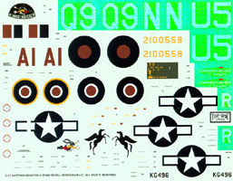
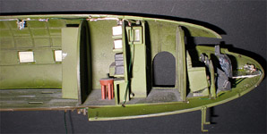
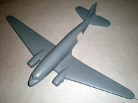
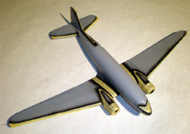

|

1/48 Revell-Monogram Douglas C-47 Skytrain
Kit #5603 Collector's Market Value $45.00
Images and text Copyright © 2004/2013 by Matt Swan
Developmental Background
December 17th, 1935, from the hangers at Clover Field Santa Monica, California the Douglas Aircraft Company's large silver twin engined aircraft rolled out and took flight for the first time. I doubt that the engineers involved with this project knew exactly what kind of aerial legend they had given birth to for this shining bird was the DC-3. The DC-3/C-47/R4D/Dakota and its many other variants, has touched the lives of people throughout the Aviation World for nearly 70 years.
This aircraft set a new standard for air travel and made it possible for airlines to make a profit in passenger service without government subsidies but when the Second World War flared up the US military saw this aircraft as the answer to it's troop and supply movement needs in all theaters. With some modifications to remove the niceties of civilian commuter flying and the installation of large cargo doors this incredibly strong and dependable aircraft became the C-47. Few aircraft are as well known as the C-47 or "Gooney Bird" as it was affectionately nicknamed. They carried personnel and cargo, and in a combat role, towed troop-carrying gliders and dropped paratroops into enemy territory. In the Pacific Theater they moved troops and supplies to forward airbases and ferried wounded troops back for medical care. First ordered in 1940, the end of the war had seen 9,348 produced for military service.
This may seem like more than enough to create a legend but this sturdy Douglas aircraft was just getting started. Many of these wartime workhorses continued in service performing in the Berlin Airlift and many other less notable arenas. During the Korean War, C-47s hauled supplies, dropped paratroops, evacuated wounded and dropped flares for night bombing attacks. In Vietnam, the C-47 served again as a transport, but it was also used in a variety of other ways, which included flying ground attack (gunship), reconnaissance, and psychological warfare missions. Others moved back into civilian service moving passengers and cargo while others went on to the movies and many private ventures.
DC-3 / C-47 production closed down in 1946. The last one off the line -- rebuilt from a plane that was started as a C-47 -- was a DC-3 delivered to Sabena Airlines of Belgium. Today more than 1,000 DC-3s and C-47s remain in service, including some 300 in military use. The South African Air Force operates 40 C-47s, many now equipped with turboprop engines, in coastal patrols and other services. The very first DC-3/C-47 that was put into military service, restored to its original configuration, still flies carrying tourists on sightseeing flights over San Francisco Bay for Otis Spunkmeyer Airlines.
The Kit
Some days you just get lucky and that was just the kind of day I was having. I had gone out to see a few estate sales and came across this kit in a water-damaged box with no decals and no instructions for a measly $6.00. All the plastic pieces were still there, most still attached to the sprues. It took great self-control to not dance all the way to the lady with the cash box and pay for my find. Once I was home with my treasure the first thing I did was post a request for assistance on Hyperscale.com for decals and instructions then retired to the kitchen to gently wash the pieces and inspect the kit.
This is a classic Monogram model and in classic Monogram fashion the kit has been reissued many times already and is sure to be hitting the hobby shops again in the future. The model features raised panel lines and rivets and as this aircraft was developed in 1935 this raised detail type of molding is actually fairly accurate. The parts are cast in an olive drab plastic that is just slightly brittle and will tear if you're not careful removing parts or cleaning up sprue connections. Some of the pieces show some very slight flash but nothing real bad. All the smaller parts have mild mold separation lines. There are no injector pin markings in any places that will cause a problem and I could find no sink marks anywhere on the kit - a good sign. Interior bulkheads feature nice raised detail and the radio operator's compartment is well detailed which is kind of a bummer because once built you won't be able to see any of that stuff. The cockpit looks pretty good with a fair dashboard, basic seats and an overhead consol with minimal detailing. The main cabin has interior rib structure cast into the walls and we get some canvas bench seats to place in here also. The kit includes a large wing spar that contains some landing bay details and landing light details. The wing is a six-piece assembly and all the parts fit together very well.
This kit includes a bunch of paratroopers with some gear. The troops are basically three different poses repeated several times. Also included are a pilot and two ground crew figures. These guys are the same basic crew figures that show up in so many different Monogram kits that they must rank as the most cast plastic figures in the history of model aircraft. Overall the kit contains 81 Olive Drab injection molded pieces and six clear parts. Of those 81 Olive Drab pieces 21 of them are devoted to paratroopers and crew so in actuality, of the 87 pieces in the box only 66 of them are for the model itself. And you know what else? When I got done washing these parts and checked my email there was a set of scanned directions and TWO different folks offering to provide me with decal sheets for the kit - it's a wonderful world.
You may click on the above images to view larger pictures
Decals and Instructions
I'm not quite sure how the original direction package was formatted, as a booklet or a fold out but one thing is for certain - there is a lot of it. What I have in my hands is a copy of the 1999 kit directions scanned and reprinted. In this format I get 12 full sized pages that begin with basic model building safety rules and a paint code chart. Paints are listed by color name only with no FS numbers or paint manufacture numbers. Thirty exploded view construction steps follow this. Basic color requirements are listed within each step but finer detailing paint is left up to your imagination or to outside research. The instructions finish off with two painting and decal placement diagrams covering the two aircraft represented on the decal sheet.

I started out with a kit that had no decals but ended up with decals for two different releases of the model. The images appearing to either side here are linked to larger pictures if you care to click on them. On the left we have the 1989 issue decals covering two American Aircraft and to the right are the 1999 issue decals covering one American and one British aircraft. Both sets of decals are typical Monogram offerings with adequate detail resolution for the average modeler. They include plenty of service stencils and warning markings, are thin enough to not cause any problems during application and show good color density and print registry. The newer set of decals seems to offer a few more service stencils and warning markings than the older set, which may be in response to modelers growing demands for more precision in their toys. On the 1999 issue scan I adjusted the color balance to make the white markings more visible.
Conclusions
I don't think there is another aircraft that has touched so many lives or performed in service for so long as the DC-3/C-47. Much to the chagrin of the Douglas Corporation at the end of the World War Two they had new aircraft designs ready to go but the DC-3/C-47 was continuing to fulfill the passenger and cargo needs of the aircraft market. The model is well designed, the parts fit well with only minimal putty needed for construction. The instructions are very good and the decals are adequate for the job. As this has been on the market for some time now there are quite a few things out there to help dress it up. Leading Edge, Eagle Strike Decals, Tally Ho and Superscale all offer various decal packages for the model. Cutting Edge offers mask sets and a gunship conversion for the kit, Engines and Things has replacement engine faces, Moskit has exhaust manifolds and True Details has replacement wheels. Whether you're going to build this right out of the box or go-for-broke and get everything you can find on the aftermarket you'll end up with a nice model of a great aircraft. I give this kit a good recommendation.
Editor's note, 2012: Since I wrote this review back in 2004 a couple of important things have happened with the C-47 and DC-3 series in 1/48, namely Trumpeter Models from China has issued a new tooled C-47 with engraved panel lines and a C-48 (the military version of the DC-3). I have not yet looked over these kits due mostly to their high cost. As with any new kit we soon see the introduction of aftermarket parts and this held true for the Trumpeter kit. Quick Boost has issued some really nice engine faces for the C-47/DC-3 and Scale Aircraft Conversions has issued a replacement metal landing gear set useful for either kit that looks pretty nice. I think that pretty much covers the biggest developments for this aircraft in 1/48 over the last eight years. Personally I think that dollar for dollar the old Monogram kit still gives the best bang for the buck.
Construction 11/28/2012
 I had seen a C-47 at a show done up all yellow in Austin Airways livery with this black and red racing strip down the side and thought "Wow, that is a very sharp looking aircraft!" That was the last color scheme Austin had before they were gobbled up by the Deluce Brothers and NorOntair and it set the hook for me, I had to build one. I found decals from Leading Edge for that aircraft and started laying down my plan. Not only did I want to do that scheme but I wanted to light the interior, the instrument panel and the wing lights. I'm talking about both the marker lights and the landing lights. I also wanted to motorize this thing. I started by drilling out all the instruments on the panel and sanding the panel part until it was fairly thin. I made a clear back-plate for it and added Reheat instrument decals. I plan on installing a red LED encased behind this IP to light things up. All of this was actually done back in 2004 then I lost my motivation on the project. I was not sure how to finalize the electrical aspect or what to do about a base so shelved the entire project.
I had seen a C-47 at a show done up all yellow in Austin Airways livery with this black and red racing strip down the side and thought "Wow, that is a very sharp looking aircraft!" That was the last color scheme Austin had before they were gobbled up by the Deluce Brothers and NorOntair and it set the hook for me, I had to build one. I found decals from Leading Edge for that aircraft and started laying down my plan. Not only did I want to do that scheme but I wanted to light the interior, the instrument panel and the wing lights. I'm talking about both the marker lights and the landing lights. I also wanted to motorize this thing. I started by drilling out all the instruments on the panel and sanding the panel part until it was fairly thin. I made a clear back-plate for it and added Reheat instrument decals. I plan on installing a red LED encased behind this IP to light things up. All of this was actually done back in 2004 then I lost my motivation on the project. I was not sure how to finalize the electrical aspect or what to do about a base so shelved the entire project.
Now years later I am drifting with no modeling goals trying to find some project that would catch my imagination and saw this under a pile of dust. The next day fellow modeler and forum member Stoneboat recounted a story to me which lite the fires of my creativity and really made this project move, Stoney had provided the final pieces of the puzzle. Here is what he said to me,
"I was in what was then Frobisher Bay - now Iqualit - once on a charter with a DC-3 from another company. Austin was there with that machine on skis, they were hauling a drill outfit out to the boondocks someplace and they had one day's work left. They had lost the starter on the right engine the day before and didn't have a spare on board. They were starting the right engine with a rope around the prop dome, pulled by a pickup truck. It was only for that one day while they finished the contract and flew back to Timmins, but it's typical of how you must improvise when out in the middle of nowhere."
Skis are now in development, lighting is being installed and electric motors are being set up. Once again she lives and here are a few images of what transpired up until this moment.
You may click on these small images to view larger pictures
I laid in some additional rib detail on the fuselage wall opposite the cargo doors. As I was going to model these open and I was not going to have any seats in here which would have hid that area of the fuselage wall I felt it was necessary. The rest of the interior was built up right from the kit instructions. The Austin Airways craft did not have an astrodome so that area was filled with some plastic card stock and the exterior will get a little additional sanding and filling after assembly. Once I secure the interior assembly I'll run wide angle red LEDs in the ceiling , probably two for the cargo bay and one for the radio room to light things up.
1/7/2013
Once the basic interior was glued into one fuselage side I soldered together three flat top wide angle 3mm red LEDs in series and superglued them to the cabin ceiling. Two of these are spaced in the cargo area with the third in the radio room. The lead from that LED is taken into the floor and run into the nose where it powers one more of these flat top red LEDs behind the IP. On this one I had to make a small cardboard flashing to block light bleed from under the dash. In the image below the wires are not painted yet - they all get a coat of interior green to help hide them. Before I installed the interior section I did take the time to make all new windows for the cargo area from clear styrene sheet stock, mask them with masking tape and install with clear parts cement. I did this because the kit windows were one large piece that would be visible through the open cargo door and because each and every window pane had an injection mark right smack dab in the middle of it. Also at this point in time I cut off the tail strobe, drilled it out and ran a piece of fiber optic to it. Right now this is held in place with some tape until I'm ready to close up the fuselage.

Okay, let's talk about navigation lights next. My initial thought was to build a flasher board from scratch to make the wingtips and tail beacon strobe then someone turned me onto a company called Ngineering who produced this neat little nav board that was dirt freaking cheap. For the price it simply was not worth my time and effort to build one so I went ahead and bought one of these. Now this board has some good points and some bad points. How good and how bad depends on what you as the modeler are willing to tolerate and accept. On the good side this thing is very inexpensive (compared to other production systems) coming in at about $14 US. It does provide for two wingtip flashers and a single strobe and includes three little tiny surface mount LEDs. It's small enough that it can be used in virtually any scale model aircraft. On the bad side: this thing is small, really freaking small. I needed a very fine tip on my soldering iron to attach the leads and had to use a magnifying glass to see what I was doing. Those surface mount LEDs that are included are so small I was afraid I would simply burn them out with the soldering iron trying to attach leads so I just threw them in the spare electronics box for later use if I feel really adventurous. The beacon and strobe pattern is not adjustable - it is what it is. Note in the image above right that I used magnet wire to connect all my electronics with is coated which a green insulating paint which must be carefully scraped off the ends prior to soldering.
Now that leads are attached to the nav board I can solder LEDs in place. I use a single 3mm domed red and blue LED for the wingtips. On each I drill a small hole into the top of the dome then insert the end of the fiber optic and add a drop of superglue followed by accelerator. Each is also covered with some electrical shrink tube to seal things up from light bleed. The tail strobe is a flat top 3mm white LED basically set up the same way as the wingtips. The wing parts are assembled and the motors are fitted. The faces of the nacelles have been cut out to accept the body of the motors which are secured with spots of hot glue. This must be used sparingly to avoid melting the plastic of the airplane. The motors are wired in series and the power leads will track through one of the landing gear bays as hydraulic lines. The lighting power leads will go through the other landing gear bay in the same manner. Now the fuselage halves are glued together. I cut some pieces of stock plastic sheet, painted one side interior green and glued them under to floor pan to block any escaping light from getting into the cargo bay around the wing joint area. From here the wings and tail planes are attached and some putty fill is needed at the wing joint. Tissue is stuffed into the various openings and we are about ready for some primer.
1/15/13
Primer for this build is Mr. Surfacer 1000 cut about 50% with lacquer thinner. After the first coat several minor problems showed up in seams that were filled and sanded before a final coat of primer went down. Since this is a well maintained civilian aircraft with a fairly recent paint job I'm keeping the finish "clean" with no preshading. This does not mean there is no flat black to work with however. I shot thinned flat black on all the leading edges for de-icing boots and across the nose for an anti-glare panel. Additionally I did wide bands of flat black around the engine nacelles and for wing walks. All these areas had to be masked off which took several days of cutting strips of tape and measuring to maintain consistent area width. Finally it was all masked and I was able to clean everything up with one last coat of primer. I set this part of the build aside to consider my pickup truck, remember the original story? A pickup truck pull starting a dead radial engine?
There are not a lot of choices in pre 1970 1/48 scale pickup truck kits so I settled on the old Revell 1956 Ford F-100. It's the right scale and the right period but does have a few issues, the biggest of being the lack of any clear parts. It's not that they are missing, they simply were never part of the kit so I will have to scratch build my own wrap-around windshield and other panes. I'll be modeling the truck as a Transport Canada vehicle in International Orange. I'll have to make a set of decals for the door, nothing too complex, just the white maple leaf and some black text. The truck hood is a bad fit so I dispensed with detailing the engine and just glued the whole front end together. Right now the cab and bed are only resting on the frame. The card stock piece laying in the bed is my cutting template for the front windshield.


5/13/13
Well, it certainly has been a while since I've updated this build hasn't it? There are a couple reasons for this, some model related and some not. On the non-model related side of the story is the 'honey-do' list which has me systematically remodeling a four bedroom century home including electrical and plumbing. I do still find a small amount of time to model when the boss is not watching though. Unfortunately my modeling time has been less than productive. I figured that once I was past the overall paint job this thing would begin to move at a very rapid pace, at least that is what I figured until I tried to apply the first decal.
Before I get into these decals let me finish up the primary paint job. Once all the masks were in place with the flat black I started with a blend of flat and gloss Testors yellow thinned heavily with lacquer thinner. After shooting most of the fuselage I decided this was going to take way too long and consume a ton of paint. I then changed over to a rattle can of gloss yellow and laid down about five or six light coats all around the model. This worked out pretty well and mostly I credit this to the good layer of gray primer I started with.
If I had tried this over raw plastic I would probably still be shooting yellow four months down the road. Anyway, long story short, everything is now yellow and the masks can come off. During the removal of the masks I found that I had installed one of the side widows backwards with the mask facing in (DOH!) and had to replace that. I also had some bleed issues that were touched up with a fine brush - nothing too bad. The biggest issue I had at this time was tape adhesive wanting to remain on the model and this is my fault because I left those masks on for so bloody long. Using a fresh piece of tape I was able to quickly and easily lift off that adhesive.
Back when I was a wee lad I learned to apply fixative to custom printed decals to help prevent cracking and to protect the delicate artwork so I used some Testors decal fixative on these Leading Edge decals before cutting the sheet. I decided to start with one of the large side racing stripes, cut it from the sheet and let it soak in a bowl of warm water. One problem with these decals is there are no window cut-outs. I did not see this as a major problem figuring I would simply cut them out with a fresh razor knife after application. Okay, the decal is loose on the carrier sheet and I'm sliding it onto the fuselage. Suddenly it becomes clear that the decal has zero flexibility and is as brittle as thin glass. At every bend this thing is cracking and shattering. HOLY CRAP, I'm not talking about splits from rough handling but literally shattering! I'm hoping that once it is mostly on the fuselage I can apply a heavy coat of solvent to soften it up but this has little to no effect on the decal. I have never in my life seen a decal behave like this. I soak this thing with Micro-Sol hoping that given some time it will soften and conform - no way, not happening. Now I have a hard, brittle decal partially secure to my model. I try to soften it up again with Future - no luck. I try cutting out a window area and all sorts of bad things happen, the decal is shattering and breaking free all around the window area. For three days I struggle with one bloody decal before I have enough secured to the model to say the hell with it and just break off the offending areas and repair it with paint, a fine brush and some magnifying glasses. Now after my fourth day of working this *&%^#(* decal I have to set this aside and let my blood pressure drop back to acceptable levels - this is supposed to be fun, right? Don't be looking for another update real quick. I'm not giving up but I am taking a break to work on something a little more cooperative.
|


{kind=link}
{kind=link}
{kind=link}
{kind=link}
{kind=link}
{kind=link}
{kind=link}
{kind=link}
{kind=link}
{kind=link}
{kind=link}
{kind=link}
{kind=link}
{kind=link}
{kind=link}
{kind=link}
{kind=link}
{kind=link}
{kind=link}
{kind=link}
{kind=link}
{kind=link}
{kind=link}
{kind=link}